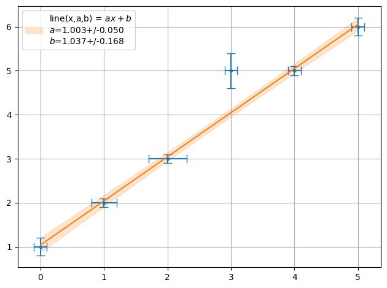

Linear Fit¶
[1]:
import numpy as np
from smpl import plot
from smpl import io
from smpl import fit
from smpl import functions as f
import uncertainties.unumpy as unp
import uncertainties as unc
[2]:
data = np.loadtxt(io.find_file('test_linear_data.txt',3))
xdata = data[:,0]
xerr = data[:,2]
ydata = data[:,1]
yerr = data[:,3]
x = unp.uarray(xdata,xerr)
y = unp.uarray(ydata,yerr)
[3]:
data
[3]:
array([[0. , 1. , 0.1, 0.2],
[1. , 2. , 0.2, 0.1],
[2. , 3. , 0.3, 0.1],
[3. , 5. , 0.1, 0.4],
[4. , 5. , 0.1, 0.1],
[5. , 6. , 0.1, 0.2]])
SciPy¶
[4]:
ff = plot.fit(xdata, ydata, fmt='.', label='data', xaxis="x in a.u.",yaxis="y in a.u.",function=f.linear, params=[1])
[5]:
ff = plot.fit(xdata, ydata, fmt='.', label='data', xaxis="x in a.u.",yaxis="y in a.u.",function=f.line, params=[1,2])
[6]:
ff = plot.fit(x, y, fmt='.', function=f.line, params=[1,1], sigmas=1,lpos=2)

[7]:
ff = plot.fit(xdata, y, fmt='.', function=f.line, params=[1,1], sigmas=1,lpos=2)
print("Chi2 = ",fit.Chi2(xdata,y,f.line,ff))
Chi2 = 6.120448179271708
Correlations¶
Let’s take a look at correlations on the example of calculating the y axis intercept. Again:
[18]:
a,b = plot.fit(xdata, ydata, fmt='.', label='data', xaxis="x in a.u.",yaxis="y in a.u.",function=f.line, sigmas=1,extrapolate_min=-2)
Let’s calculated the intersection with the x axis, given by \(-b/a\), with correlation
[16]:
-b/a
[16]:
-1.0648148148148089+/-0.41569533919028134
and without correlations
[17]:
a_nocorr=unc.ufloat(plot.unv(a),plot.usd(a))
b_nocorr=unc.ufloat(plot.unv(b),plot.usd(b))
-b_nocorr/a_nocorr
[17]:
-1.0648148148148089+/-0.3375205305560758
While the mean agrees the uncertainties are not the same.
The Lines drawn in the plot are also correlated and cross the axis at -0.67 and -1.51 corresponding to an uncertainties of -0.42.
Minuit¶
[8]:
ff = plot.fit(xdata, y, fmt='.', function=f.line, params=[1,1], sigmas=1,lpos=2,fitter=fit.Fitter.MINUIT_LEASTSQUARES)
print("Chi2 = ",fit.Chi2(xdata,y,f.line,ff))
Chi2 = 6.120448179271703